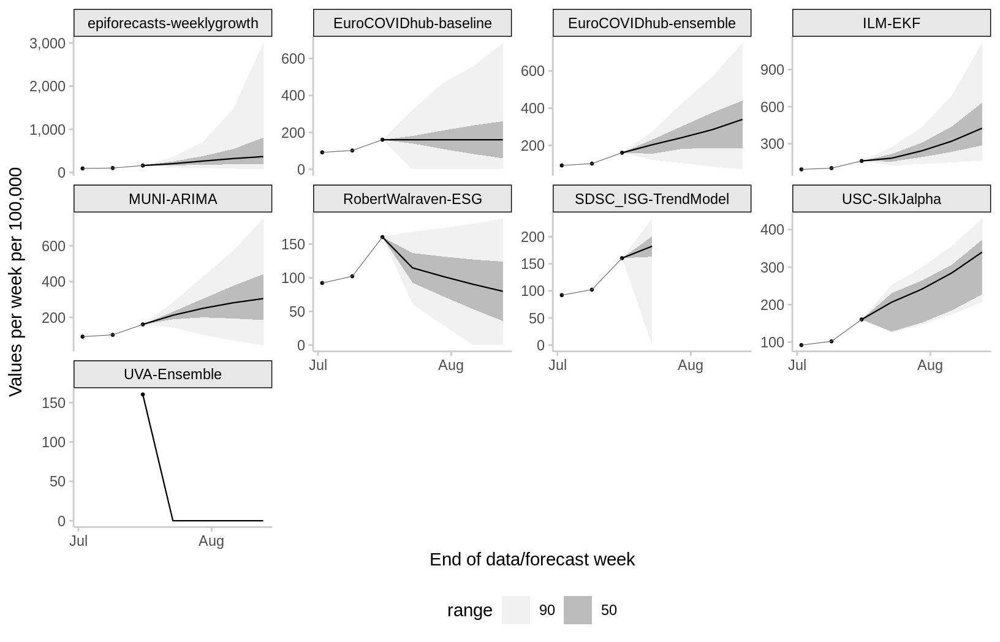
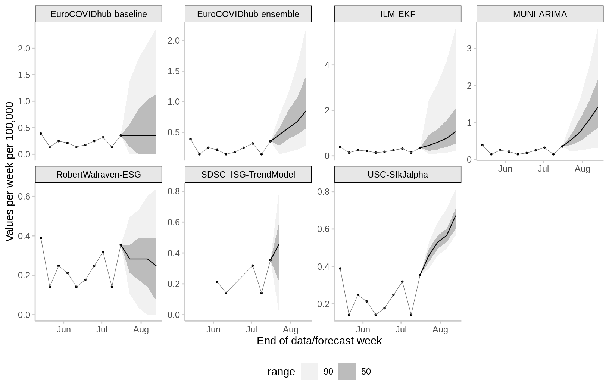
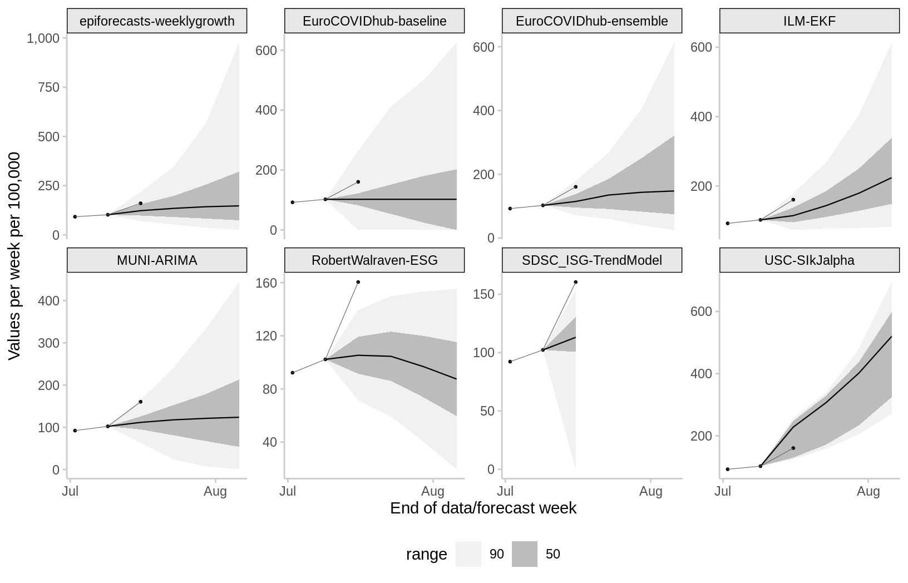
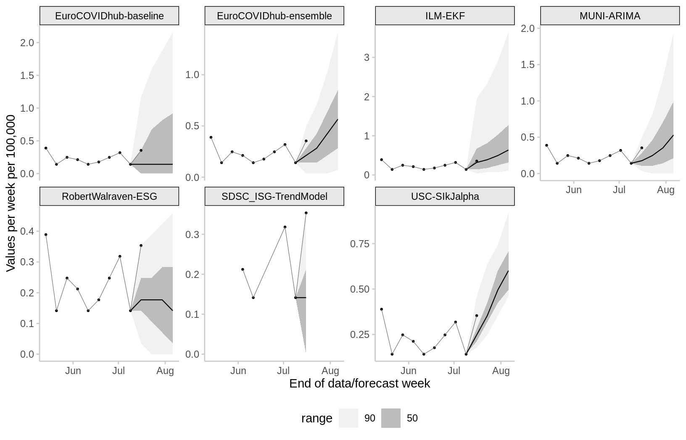
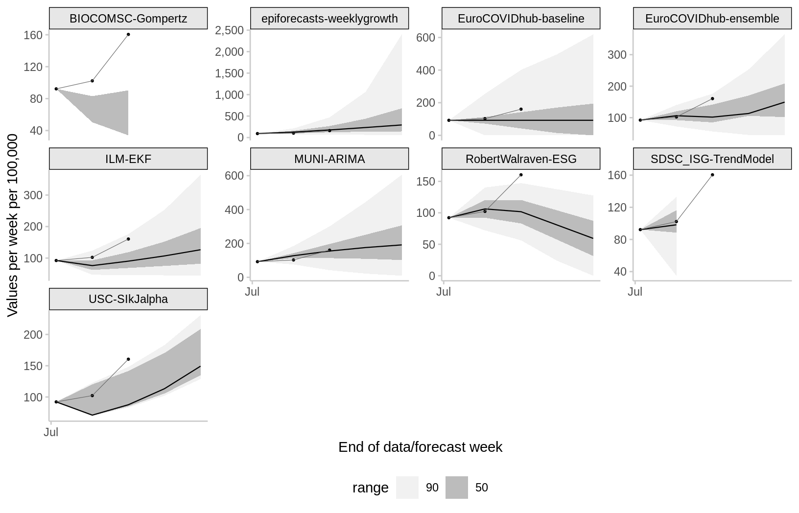
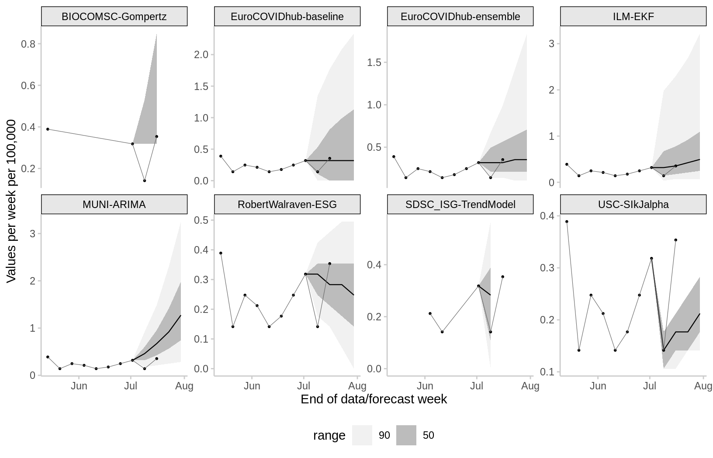

Choose the type of report you wish do view using the dropdown menu. The Model reports shows the recent forecasts and performance of the ensemble or individual models, whereas the Country reports shows model-by-model performance, either overall or by country. The reports get updated every Tuesday.
Forecasts of cases/deaths per week per 100,000. The date of the tab marks the date on which a forecast was made (only the latest forecasts and the previous 4 weeks shown). Click the Forecast tab above to view all past forecasts.


No forecasts available, possibly because of recent anomalies in the available data.


No forecasts available, possibly because of recent anomalies in the available data.


No forecasts available, possibly because of recent anomalies in the available data.
Scores separated by target and forecast horizon. Only models with submissions in each of the last 4 weeks are shown.
If you would like to learn more about a model, you can go the the data-processed folder of the European Forecast Hub GitHub repository, select a model and access the metadata file with further information provided by the model authors.